Power Automate
Eerdere versies van SharePoint bevatten workflows die in SharePoint zelf ingebouwd waren. Sinds 2023 schakelt Microsoft over van klassieke workflows naar workflows in Power Automate. Met Power Automate kunnen gebruikers geautomatiseerde workflows maken tussen verschillende Microsoft 365-diensten en andere apps en diensten om bestanden te synchroniseren, meldingen te ontvangen, gegevens te verzamelen en meer, waardoor productiviteit en efficiëntie toenemen. Power Automate is een automatiseringstool zoals Zapier, maar dan gebouwd in het Microsoft 365-ecosysteem.
1. Toegang
Je kan Power Automate openen in de Microsoft 365-demo:
- rechtstreeks via https://make.powerautomate.com
- via het Microsoft 365-portaal
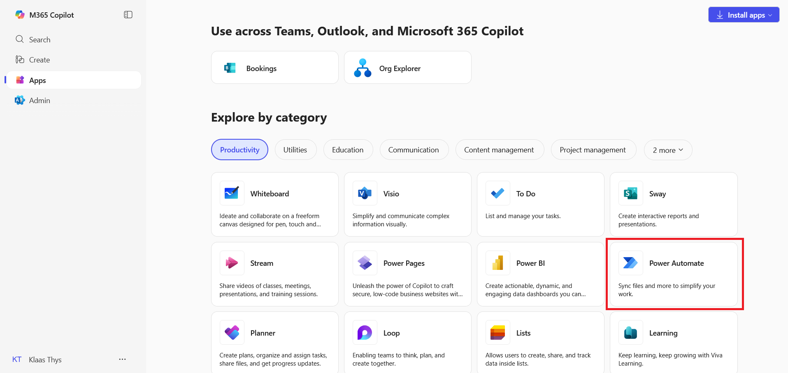
2. Taal
Net zoals bij de andere Microsoft 365-modules stel je de omgeving best eerst in op het Engels.
De reden waarom we alle Microsoft 365-modules in het Engels gebruiken, is dat de meeste ondersteuningsmiddelen, documentatie en communityforums in het Engels beschikbaar zijn. Zo kan je instructies makkelijker volgen, problemen oplossen en instellingen configureren zonder technische termen te moeten vertalen.
- Klik rechtsboven op het tandwielicoon.
- Selecteer All Settings for Power Automate.
- Kies je voorkeurstaal in de vervolgkeuzelijst.
- Klik op Save.
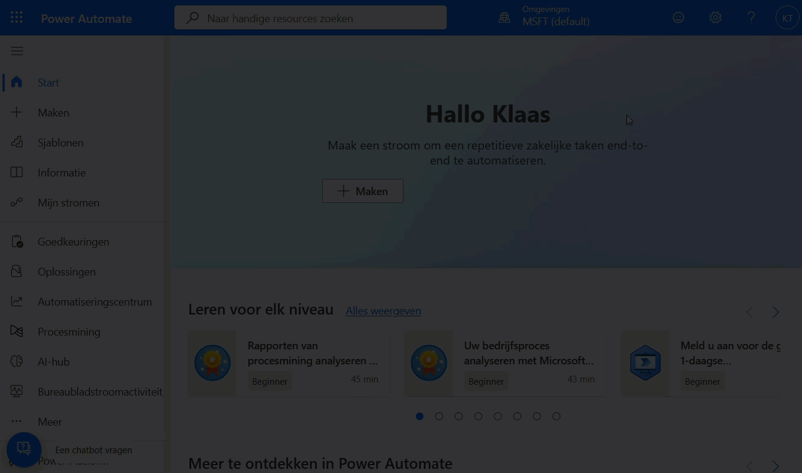
3. Een Microsoft Dataverse-databank aanmaken
In nieuw aangemaakte Microsoft 365-tenants moet je Managed Environments inschakelen om een Microsoft Dataverse-databank aan te maken, die vereist is om Power Automate approvals te gebruiken. Volg de onderstaande stappen om de Microsoft Dataverse-omgeving aan te maken:
3.1. Het Power Platform Admin Center openen
- Ga naar: https://admin.powerplatform.microsoft.com
- Klik op de drie puntjes naast MSFT (je default environment).
- Selecteer Enable Managed Environments.
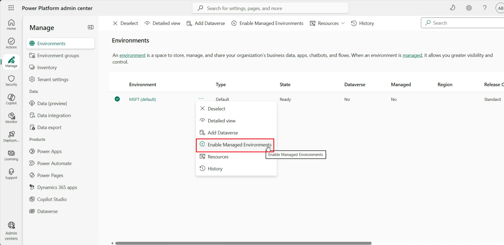
3.2. Dataverse toevoegen
- Klik op de knop "Add Dataverse"
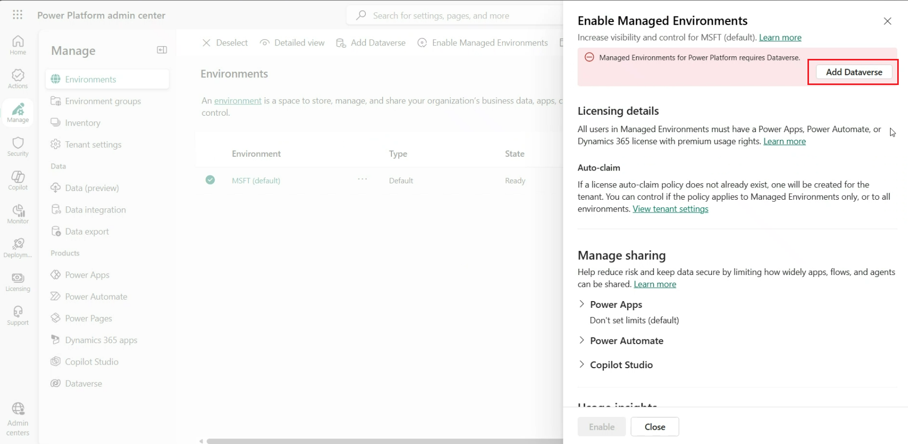
3.3. Dataverse-instellingen
- Laat de instellingen op "Defaults" staan.
- Klik op de knop "Add"

4. Eenvoudig workflowvoorbeeld
Het onderstaande voorbeeld toont een eenvoudige Power Automate-workflow die:
-
Trigger De workflow start telkens wanneer een nieuw document wordt geüpload naar de SharePoint document library.
-
E-mailmelding Er wordt een e-mail verstuurd naar een gebruiker om te melden dat een nieuw document naar de SharePoint document library is geüpload.
4.1. Workflow aanmaken
- Klik in het linkermenu op "Create"
- Klik op "Automated cloud flow"
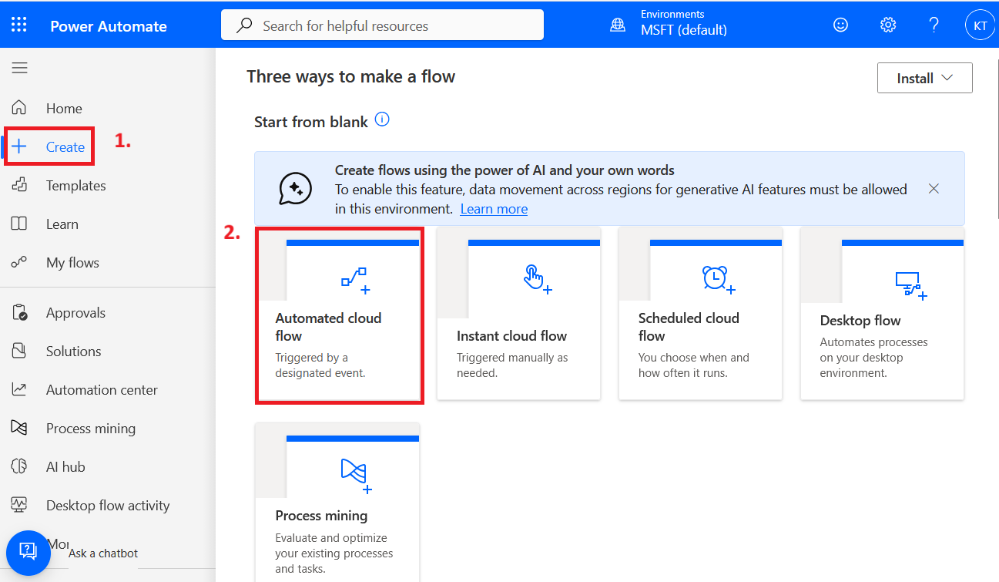
4.2. Naam en trigger
In de volgende stap geef je de workflow een naam en selecteer je een trigger. Een trigger is de gebeurtenis die de Power Automate-workflow start.
- Geef een naam voor de flow in het veld "Flow name".
- Typ SharePoint file in de zoekbalk.
- Selecteer de trigger "When a file is created (properties only)".
- Klik op Create

- Gebruik "(properties only)"-triggers wanneer je in Power Automate enkel de metadata van een bestand nodig hebt.
- Gebruik triggers zonder "(properties only)" wanneer je het eigenlijke bestand in Power Automate moet verwerken.
- Gebruik "file"-triggers voor SharePoint document libraries.
- Gebruik "item"-triggers voor SharePoint-lijsten.
4.3. De trigger bewerken
Bewerk de actie "When a file is created (properties only)"
- Selecteer de SharePoint-site (Site Address).
- Selecteer de Document library (Library Name).
- Klik op de pijltjes om het instellingengedeelte van deze actie samen te vouwen.
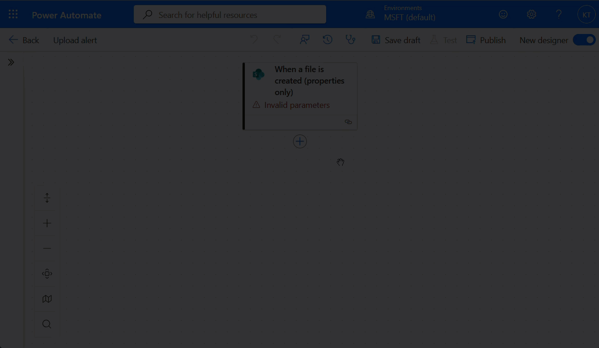
4.4. Een actie toevoegen
Voeg een nieuwe Power Automate-actie toe
- Klik op de knop + onder de actie "When a file is created (properties only)".
- Typ "Send an email" in de zoekbalk.
- Selecteer de actie "Send an email (V2)".
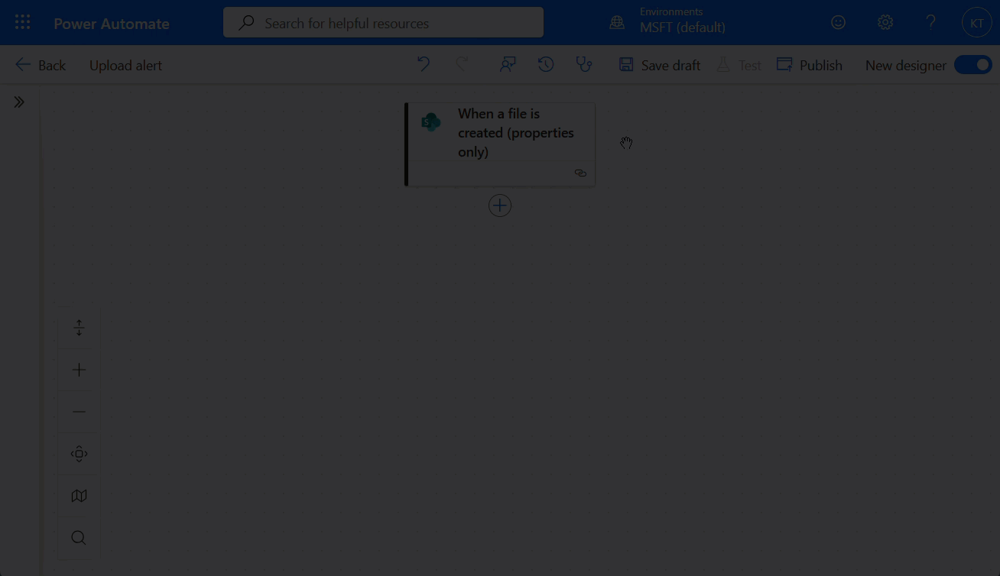
4.5. De actie configureren
Bewerk de actie "Send an email (V2)"
- Geef het e-mailadres in van de persoon of groep die je wil verwittigen (To).
- Schrijf een onderwerp voor de e-mail (Subject).
- Stel de inhoud van de e-mail op (Body).
- Gebruik "/" en selecteer daarna "Insert dynamic content" om eigenschappen van het document in te voegen, zoals de documentnaam.
- Klik op de pijl om de actie-instellingen samen te vouwen.
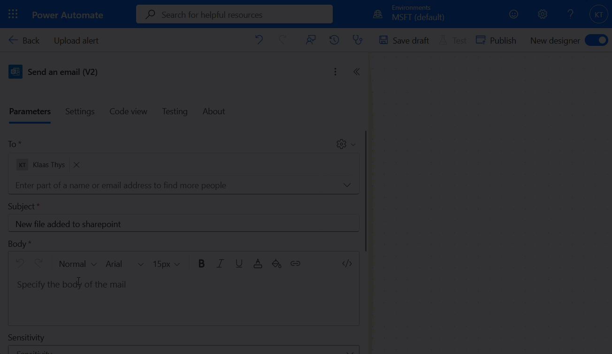
4.6. De workflow opslaan
Sla de workflow op en publiceer ze
- Klik op Save draft om je workflow op te slaan.
- Klik op Publish om de workflow te activeren.
Zorg dat je de melding ziet: "Your workflow is ready to go. We recommend you test it".

4.7. De workflow testen
Test de workflow door:
- Een nieuw bestand te uploaden naar de SharePoint document library.
- De Outlook-account te openen van de gebruiker die is ingesteld om de e-mailmelding te ontvangen.
5. Voorbeeld van een goedkeuringsworkflow (Approval)
Het onderstaande voorbeeld toont een Power Automate-goedkeuringsworkflow die:
-
Trigger De workflow start telkens wanneer een nieuw document wordt geüpload naar de map Reports in de SharePoint document library.
-
Status bijwerken De documentstatus wordt ingesteld op Pending.
-
Goedkeuringsmail Er wordt een geautomatiseerde e-mail verstuurd naar de aangeduide goedkeurder met het verzoek om het document na te kijken en goed te keuren.
-
Status bijwerken
- Als het document wordt goedgekeurd, wordt de kolom Approval Status bijgewerkt naar Approved.
- Als het document wordt afgewezen, wordt de kolom Approval Status bijgewerkt naar Rejected.
5.1. Nieuwe workflow
- Klik in het linkermenu op Create.
- Klik onder Start from template op Approval.
- Selecteer Request approval when a new file is added to SharePoint.
- Klik op Continue
- Selecteer de SharePoint-site (in het getoonde voorbeeld: FirstSite).
- Kies onder Library de library Documents.
- Kies een map: selecteer Shared Folders en navigeer naar de map waarop je de goedkeuringsworkflow wil toepassen.
- Approval type: stel in op Approve/Reject.
- Approval title: laat de standaardwaarde staan; deze wordt gebruikt als onderwerp van de e-mail.
- Assign approval to: selecteer de Entra-gebruiker die de goedkeuringsmail moet ontvangen.

5.2. De workflow bewerken: Pending
De standaard Power Automate-workflow bevat niet alle nodige stappen. In deze stap voegen we de vereiste stappen toe aan het sjabloon.
We voegen een stap toe zodat, wanneer een bestand aan de SharePoint document library wordt toegevoegd, de kolom Approval Status automatisch op Pending wordt gezet:
- Bewerk de workflow door op de knop Edit te klikken.
- Klik op het icoon + onder When a file is created (properties only).
- Zoek naar SharePoint.
- Klik op See more.
- Selecteer Update file properties.
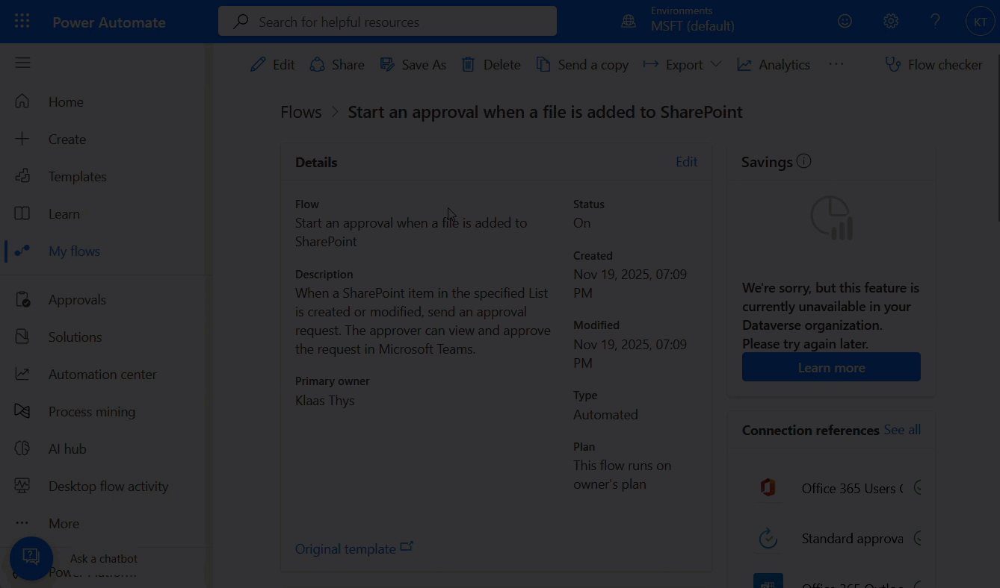
- Selecteer opnieuw de SharePoint-site.
- Klik op de libraryenaam: Documents.
- Typ
/, selecteer daarna Insert dynamic content en kies ID. - Selecteer in de vervolgkeuzelijst Advanced parameters de optie Approval Status Value.
- Stel de Approval Status Value in op Pending.
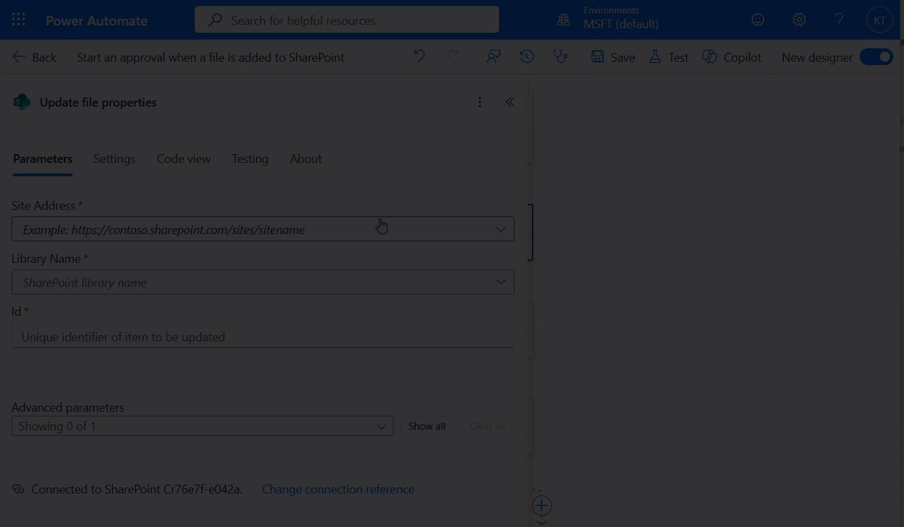
5.3. De workflow bewerken: Approved en Rejected
Herhaal de stappen voor het geval dat het document goedgekeurd wordt en voor het geval dat het afgewezen wordt. Deze beslissing vind je in het blok Condition.
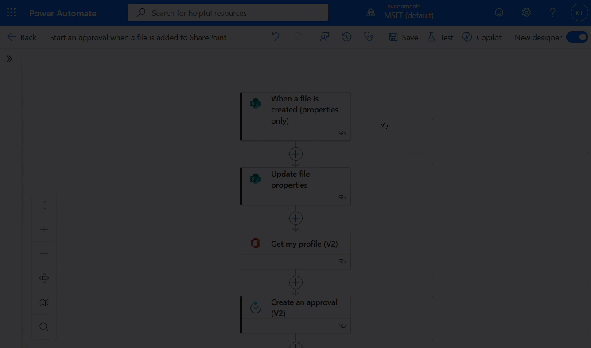
Configureer in de True-tak (If yes) de actie Update file properties als volgt:
- Site Address: FirstSite
- Library Name: Documents
- Id: ID
- Advanced parameters: Approval status value
- Approval status value: Approved
Configureer in de False-tak (If no) de actie Update file properties als volgt:
- Site Address: FirstSite
- Library Name: Documents
- Id: ID
- Advanced parameters: Approval status value
- Approval status value: Rejected
Het resultaat ziet er als volgt uit:

5.4. De Condition aanpassen
Het blok Condition is niet correct geconfigureerd. Pas het als volgt aan:
- Klik op het blok Condition.
- Verwijder de variabele actions uit het veld value.
- Typ
/en selecteer Insert dynamic content. - Kies Outcome (in een Nederlandstalige interface: resultaat).
- Stel de voorwaarde in op is equal to "approve".
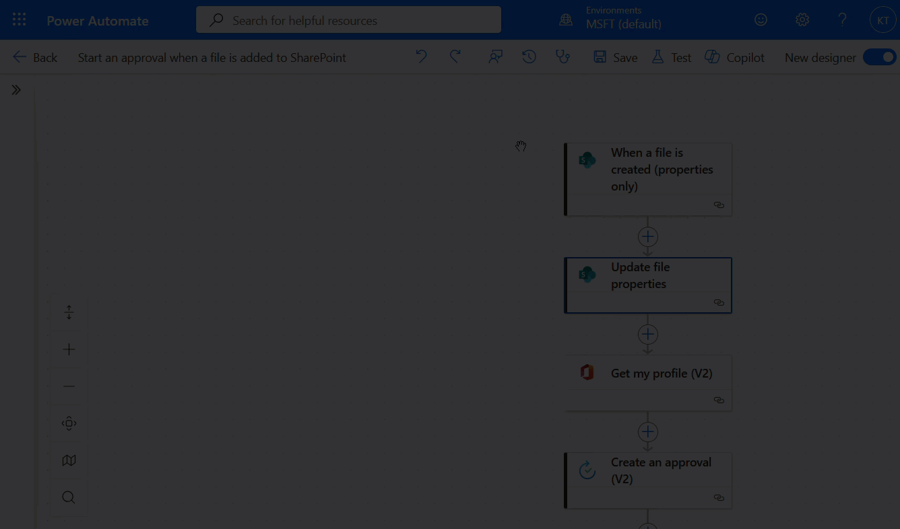
6. Overzicht
Krijg een overzicht van wanneer en hoe de workflow is uitgevoerd:
- Klik in het linkermenu op My flows.
- Klik op de flow die je wil opvolgen.
- Scroll naar beneden naar de 28-day run history.
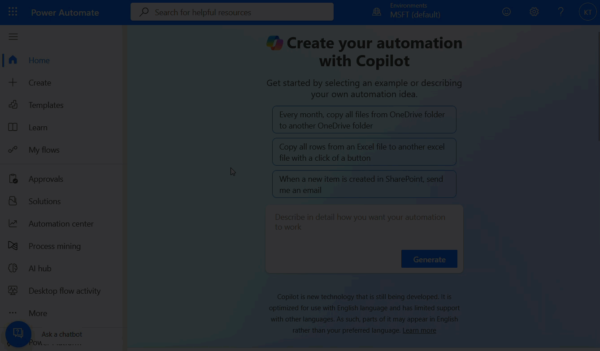
Hier zie je een overzicht van wanneer de flow is uitgevoerd. Door op een tijdstempel te klikken, krijg je een gedetailleerd beeld van hoe de flow is verlopen.